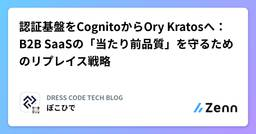
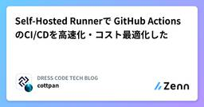
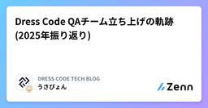
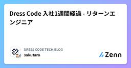

DRESS CODE TECH BLOGのフィード
https://zenn.dev/p/dress_code
DRESS CODEのProduct & Technologyチームによるテックブログです！ プロダクトマネジメントからモデリング、アーキテクチャ、フロントエンド、バックエンド、SRE、セキュリティなどなど様々なテーマで情報を発信しています！
フィード

認証基盤をCognitoからOry Kratosへ：B2B SaaSの「当たり前品質」を守るためのリプレイス戦略 1
1
DRESS CODE TECH BLOGのフィード
Dress Code Advent Calendar 2025の12日目の記事です。こんにちは。11月にDress Code株式会社に入社した、ぽこひで( @pokohide ) です。入社後、認証基盤のリプレースを担当することになり、既存のAmazon CognitoからOry Kratosへ移行するという意思決定を行いました。弊社は創業からまだ1年程度ですが、事業の急成長に伴い、認証周りの課題が早期に顕在化していました。 本記事では、 「なぜ Cognito から Ory Kratos へ移行するのか」 を背景・検討プロセス・選択の決め手という観点から整理して紹介します。 ...
2日前

Self-Hosted Runnerで GitHub Actions のCI/CDを高速化・コスト最適化した 2
DRESS CODE TECH BLOGのフィード
はじめにDress Code Advent Calendar 2025 の10日目の記事です。GitHub Actionsは非常に便利なCI/CDツールですが、プロジェクトが成長するにつれて、GitHub-hosted runnersだけでは対応しきれない課題に直面することがあります。本記事では、AWS上にSelf-Hosted Runnerを構築し、CI/CDパイプラインの高速化とコスト最適化を実現した取り組みについて紹介します。同様の課題を抱えている方の参考になれば幸いです。 背景・課題私たちのプロジェクトでは、GitHub-hosted runnersを使用する中...
4日前

Dress Code QAチーム立ち上げの軌跡(2025年振り返り) 2
DRESS CODE TECH BLOGのフィード
はじめにDress Code Advent Calendar 2025 の 9 日目の記事です。Dress Code は創業1年目の会社で、コンパウンドプロダクト「DRESS CODE」の提供を通して企業の経営や業務で発生するあらゆる摩擦問題を解消することを目指しています。いわゆる「2周目人材」つまり「猛者中の猛者」たちが集い、圧倒的分量・圧倒的スピードで様々な価値や機能を世の中に提供しています。Dress Code が何なのか？何をしたいのか？などなどの詳細については公式のCEOインタビューで詳しく紹介されているため、前提理解にあたり一読をおすすめします！https://...
5日前
Microsoft Graph API の認証方式を整理｜SaaS開発で検討した3つのアプローチ 3
DRESS CODE TECH BLOGのフィード
はじめにDress Code Advent Calendar 2025の8日目の記事です。こんにちは！最近、ビジネスネームを持った方が続々入社されて、自分も何か欲しいなぁと思う今日この頃です。この記事では、 Microsoft Graph API を活用した新機能を実装する際に調査・検討した3つの認証方式について解説します。Microsoft 365 / Microsoft Entra ID と連携する機能を開発する際、「どの認証方式を選べばいいんだろう？」と悩んだ経験はありませんか？実は認証方式によって、実装の複雑さ、セキュリティ、運用コスト、スケーラビリティが大きく変...
6日前

Dress Code 入社1週間経過 - リターンエンジニア 2
DRESS CODE TECH BLOGのフィード
みなさん、こんにちは。Sakutaro（X: @saku_238）です。このブログはDress Code Advent Calendar 2025の6日目の記事です！僕は 2025年12月1日から、Dress Code株式会社でエンジニアとして働き始めました。直近5年間は技術広報にフルコミットしていましたが、その前は新卒から10年以上エンジニアとして、ネットワークやデータ、社内コーポレートエンジニアなどを兼務してきました。そんな僕がソースコードの世界に 5 年ぶりに戻ってきた「リターンエンジニア」として、入社1週間（12/1 月〜12/5 金）の体験を、未来の自分と、同じようにキ...
7日前

設立初年のスタートアップに転職して1年経つので振り返る
DRESS CODE TECH BLOGのフィード
はじめにDress Code Advent Calendar 2025 の 4 日目の記事です。今年の 1 月に Dress Code 株式会社 にジョインをして、およそ 1 年が経過しました。まだ自分が若いと信じていたので「過去は振り返らない」ことにしていましたが、体力の衰えと老いから来るであろう体調の不安定さを感じずにはいられなくなりましたので、観念して振り返り記事を書いてみます。記憶力が悪いので多少脚色している部分があるかもしれませんが、ご容赦ください 🙏 対象読者0 年目のスタートアップってどんな感じなん？が気になる方Dress Code という会社に一ミリ...
9日前
Dress Code 創業 1 年目における採用・技術広報を振り返る
DRESS CODE TECH BLOGのフィード
はじめにDress Code Advent Calendar 2025・DevHR Advent Calendar 2025 の 3 日目の記事です。Dress Code 株式会社で、プロダクト開発しながらアーキテクト、組織設計、採用、技術広報などなど担当しているかわうそです。2025 年の終わりに創業 1 年目の Dress Code における採用及び技術広報を振り返ろうと思い、この記事を書きました。2024 年 9 月に設立して、2025 年 4 月に正式創業した Dress Code ですが、改めて採用は簡単ではないということを痛感しました。創業 2 年目に向けて、D...
11日前
月間350件のプルリクを捌きつつ、実装タスクも並列でこなすために必要だったものはやっぱりgit worktreeでした。
DRESS CODE TECH BLOGのフィード
Dress Code Advent Calendar 2025、2日目の記事です🎉私がgit worktreeを使うに至るまでの話と、worktreeを使う際のおすすめのツールを紹介します。AI系の話はしません。よろしくお願いします！https://adventar.org/calendars/12017 はじめに。「タイトル盛りすぎだろw」と思われそうですが、DRESS CODE（弊社が展開しているSaaSの名称）の直近1ヶ月のPR数を確認したところ、なんと350件以上がマージされていました。現在は2チーム体制で開発を行なっており、コードレビューはチーム内でクロスレビュー...
11日前
600ファイル5000箇所の多言語対応を半日で終わらせた話
DRESS CODE TECH BLOGのフィード
TL;DR約600ファイル、5,000箇所への中国語追加を「工程分割 + AST 解析」により計6時間（実装4時間、実行2時間）で完了AI にファイル単位で処理させると無駄な再計算が発生して非効率だったため、「抽出」「翻訳」「適用」の3工程に分割し AST 解析で効率化を実現この手法の鍵は「コンテキストの制御」で、適切な粒度で問題を分割し AI に必要最小限の情報だけを渡すことで処理速度と精度を最大化できる はじめにこんにちは、DressCode でプロダクトエンジニアをしているないとーです。この記事では、AI だけでは解決できなかった大規模コード変更を、AST（抽...
1ヶ月前
シード期のBtoB SaaSに入ることの面白さ
DRESS CODE TECH BLOGのフィード
はじめにこんにちは、プロダクトエンジニアをしているもず（@mozu1206）です。私は以前、シリーズCラウンドのHR SaaS企業でフロントエンドエンジニアとして働いていましたが、この度2024年9月に設立されたシードラウンドのスタートアップである Dress Code株式会社 にプロダクトエンジニアとして転職しました。シリーズCからシードへ。リスクが高いと思われることもあります。しかし、創業直後のBtoB SaaSには、成長フェーズの企業では味わえない独特の面白さがあります。この記事では、カオスと不確実性に満ちたシード期の魅力と、私がDress Codeを選んだ理由について...
1ヶ月前
今さら聞けないDDDとEvent Sourcingにおける集約
DRESS CODE TECH BLOGのフィード
こんにちは、Dress Code でプロダクト開発に奮闘中のかわうそです。今回は、DDD（ドメイン駆動設計）や Event Sourcing における集約について整理してみます。Dress Code でも DDD や Event Sourcing を採用しているのですが、日頃の会話で”集約”というワードを使いながらも適切に使えているのか怪しいときがあるなぁと思い始めたので、整理がてら記事にしてみます。!今回の記事で DDD や Event Sourcing において出てくる用語について解説していない部分もあるので、ご了承ください。また、個人的な解釈も含んだ内容になります。もちろ...
3ヶ月前
ADRを書くのが苦手なあなた（私）へ - 実体験から学んだ5つのコツ
DRESS CODE TECH BLOGのフィード
はじめに皆さんはADR（Architecture Decision Record）を日頃から書いていますか？私は片手で数えるほどしか書いたことがなく、まだまだ慣れておらず、書くたびに悩んでいます。2025年8月にDress Code株式会社に入社し、最初の中規模タスクで早速ADRを書く機会をいただきました。ADRとは？Architecture Decision Record（アーキテクチャ決定記録）の略で、システム設計における重要な意思決定とその理由を文書化する手法です。「なぜその技術を選んだのか」「どんな選択肢があったのか」を後から振り返れるように記録します。世の中...
3ヶ月前
創業4ヶ月でカンファレンスにスポンサーしました
DRESS CODE TECH BLOGのフィード
はじめに先日、「開発生産性カンファレンス 2025」と「SRE NEXT 2025」にスポンサーし、「今から新規事業・プロダクトを開発するならこれをやっておけ！」をテーマにブース出展しました。当日は現場の課題に向き合う多くのエンジニアやマネージャーの方々がブースに立ち寄ってくださり、その場でしか聞けないリアルな課題や、各社の開発・運用ノウハウについて生の意見やアドバイスをたくさんいただくことができました。また、「理想論と現実のギャップに悩んでいるのは自社だけではない」という共通認識を、多くの参加者と共有できたのも大きな収穫です。どの会社も「理想」と「現場」の間で試行錯誤している...
4ヶ月前
Vibe Codingとかいうチートスキルで、5年ぶりにEMからICに転生した件
DRESS CODE TECH BLOGのフィード
はじめにこんにちは。ぷーじ（@yug1224）です。最近、Dress Code株式会社に転職し、5年ぶりにEM（Engineering Manager）からIC（Individual Contributor）、つまり1人のプロダクトエンジニアに戻ったので、その決断の背景と現在の状況を共有します！ちなみに転職活動の話はこちらのPodcastでもしているので、良かったら聞いてみてください！https://creators.spotify.com/pod/profile/chijonohoshi/episodes/17-500AI-e356fif/a-ac1m01o なぜEMか...
4ヶ月前
ド三流でもAIと機能実装できる！ コマンドパレットでページ検索機能
DRESS CODE TECH BLOGのフィード
tl;dr機能の背景と目的: 開発生産性の向上Tips その 1: Planning をさせるTips その 2: Decision Log を書かせるTips その 3: テックブログを書かせる非エンジニアによる機能開発の学び実装詳細まとめ 機能の背景と目的: 開発生産性の向上コマンドパレットで静的なルートを検索、ジャンプできる機能を開発しました。実装を素早くレビューすることを大義名分としながら、マウスをポチポチしてページを遷移するのが億劫だったのが正直なところです。また、非エンジニアと AI（今回は Cursor の Agent mode）で、機能をリリ...
5ヶ月前
ターミナルを使う人は、とりあえず「mise」を入れておく時代。 ・・・を夢見て。
DRESS CODE TECH BLOGのフィード
「mise」ってすごい使いやすいんですよ。miseとは GitHubリポジトリの説明書きに 「dev tools, env vars, task runner」 と書かれているrust製のcliツールです。この記事ではmiseヘビーユーザーの私が推したい生産性の上がる機能を紹介するので、miseを初めて知った人も、知ってるけど使ってないって人も、ぜひ一読してみてください。ちなみに最近話題になりやすいAIツールのcliパッケージなどもmiseで管理できたりします。https://github.com/jdx/misehttps://mise.jdx.dev/ 推したい機能...
6ヶ月前
Figma公式のDev Mode MCPサーバーでUIメンテナンスから解放されよう
DRESS CODE TECH BLOGのフィード
はじめにこんにちは、ふるしょうです。DRESS CODEは画面数が既に200を超えており、新規機能開発や既存機能の拡張が目まぐるしく進んでいます。デザイントークンやタイポグラフィをデザインシステムとして運用していますが、画面内のレイアウトや複合コンポーネント、共通UIコンポーネントがFigmaのデザインデータと微妙に「ズレ」ていることが課題になってきています。(絶賛解消に向けて試行錯誤中🔥)今回は、デザインデータとUIのズレを解消する手段として、2025年6月4日にベータリリースされたFigmaのDev Mode MCPサーバーとCursorを活用して既存画面のUIメンテナン...
6ヶ月前
【TanStack Query & Table】50のテーブルを運用して辿り着いた、堅牢なDataTable設計
DRESS CODE TECH BLOGのフィード
はじめにこんにちは、ふるしょうです。私たちのチームでは、10のプロダクトを単一リポジトリで開発しており、50個のデータテーブルが存在します。これだけの規模になると、UI/UXの一貫性を保ちつつ、開発効率を落とさないための汎用的なテーブル設計が極めて重要になります。DRESS CODEでは、TanStack Tableをベースにした共通コンポーネント DataTable を開発し、プロダクト横断で統一されたユーザー体験を目指してきました。しかし、先日カスタマーサポートチームから「テーブルのデータが一瞬ちらついて見える」「検索する前から"結果がありません"と表示されるのは紛らわし...
6ヶ月前
詠唱破棄でこの威力...！プロダクト設計は命名が95%
DRESS CODE TECH BLOGのフィード
tl;dr日本から世界へ展開する製品を英語ファーストで設計中プロダクト設計は命名が95%より良い名前にたどり着くための方法その1：複数言語で、名前をつけるより良い名前にたどり着くための方法その2：AIに説明から単語を探させる 日本から世界へ展開する製品を英語ファーストで設計中私は、DRESS CODEという製品の設計をしています。初期リリースの段階から、日本をはじめ、アジア各国での提供が始まっており、グローバルな製品です。FigmaでのUI設計は、意識的に、日本語でなく、英語で行っています。当初は、グローバルにやっていく気概から始めたことです。しかし、続けていく中で...
6ヶ月前
輪読会でAI導入が加速した話──スタートアップで成果を出す「ゆるくて強い」仕組みづくり
DRESS CODE TECH BLOGのフィード
はじめに今年の1月にDress Code株式会社にジョインをして、およそ5ヶ月が経過しました。スタートアップならではの熱量と変化に圧倒されながらも日々楽しく仕事をできています。輪読会を始めて2ヶ月ほど経ったので振り返りも兼ねて、工夫や得られた成果について共有します。成長の手段としての輪読会、より効果高く成果を出すための工夫の1つとして参考になれば幸いです。 得られた成果輪読会を始めたことでこんな成果が出ました、の例。個人が課金していたCursor、会社負担になったCursorのProject Ruleの整備が猛烈な勢いで進んだ社内でNotebookLMに知見が蓄...
7ヶ月前